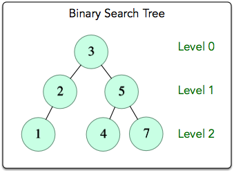

EXPLANATION:
Implementing Queue Data Structure using concept of linked-list.
Queue is basically a line in which element can enter only from rear end and exit from front end.
Queue follows concept of FIFO unlike stack which follows LIFO.
FIFO:- First In First Out
Enqueue:- Adding an element to the rear end of queue.
Dequeue:- Deleting an element from the front end of the queue.

JAVA CODE:
//A class to represent a queue //The queue, front stores the front node of LL and rear stores the //last node of LL public class QueueLL { QNode front,rear; public void QueueLL() { this.front = null; this.rear = null; } //Method to add an key to the queue. public void enQueue(int key) { // Create a new LL node QNode temp = new QNode(key); if(this.rear == null) { this.front=this.rear=temp; } this.rear.next=temp; this.rear=temp; } //Method to remove an key from queue. public int deQueue() { // if queue is empty return null. if(this.front == null) { return Integer.MIN_VALUE; } // store key of front and shift front to the next node QNode temp = this.front; this.front=this.front.next; // if front becomes null then assign null to the rear also if(this.front==null) { this.rear=null; } return temp.key; } } //Java program for linked-list implementation of queue //A linked list (LL) node to store a queue entry class QNode{ int key; QNode next; public QNode(int key) { this.key=key; this.next=null; } }
Implementing Deque Data Structure using concept of linked-list. Deque is basically a queue in which elements can be entered or removed from both the ends.

JAVA CODE:
public class DoublyEndedQueue {
Node front;
Node rear;
public void QueueLL() {
this.front = null;
this.rear = null;
}
//Method to add an key to the deque.
public void addFirst(int key) {
// Create a new node
Node temp = new Node(key);
if(this.rear == null) {
this.front=this.rear=temp;
}
this.front.prev=temp;
temp.next=front;
this.front=temp;
}
//Method to add an key to the deque.
public void addLast(int key) {
// Create a new node
Node temp = new Node(key);
if(this.rear == null) {
this.front=this.rear=temp;
}
this.rear.next=temp;
temp.prev=rear;
this.rear=temp;
}
//Method to remove an key from deque.
public int pollFirst() {
// if deque is empty return null.
if(this.front == null) {
return Integer.MIN_VALUE;
}
// store key of front and shift front to the next node
Node temp = this.front;
this.front=this.front.next;
// if front becomes null then assign null to the rear also
if(this.front==null) {
this.rear=null;
}
else {
front.prev=null;
}
return temp.key;
}
//Method to remove an key from deque.
public int pollLast() {
// if deque is empty return null.
if(this.rear == null) {
return Integer.MIN_VALUE;
}
// store key of rear and shift rear to the prev node
Node temp = this.rear;
this.rear=this.rear.prev;
// if rear becomes null then assign null to the front also
if(this.rear==null) {
this.front=null;
}
else {
rear.next=null;
}
return temp.key;
}
public int peekFirst() {
if(this.front!=null)
return this.front.key;
return Integer.MIN_VALUE;
}
public int peekLast() {
if(this.rear!=null)
return this.rear.key;
return Integer.MIN_VALUE;
}
}
class Node{
int key;
Node prev;
Node next;
public Node(int key) {
this.key=key;
this.prev=null;
this.next=null;
}
}
You are given an array of integers nums, there is a sliding window of size k which is moving from the very left of the array to the very right. You can only see the k numbers in the window. Each time the sliding window moves right by one position. Return the max sliding window.
Input:arr[] = {1, 2, 3, 1, 4, 5, 2, 3, 6}, K = 3
Output:3 3 4 5 5 5 6
Explanation: Maximum of 1, 2, 3 is 3
Maximum of 2, 3, 1 is 3
Maximum of 3, 1, 4 is 4
Maximum of 1, 4, 5 is 5
Maximum of 4, 5, 2 is 5
Maximum of 5, 2, 3 is 5
Maximum of 2, 3, 6 is 6
JAVA CODE:
// Java Program to find the maximum for // each and every contiguous subarray of size k. import java.util.Deque; import java.util.LinkedList; public class SlidingWindow { // A Dequeue (Double ended queue) // based method for printing // maximum element of // all subarrays of size k static void printMax(int arr[], int n, int k) { // Create a Double Ended Queue, Qi // that will store indexes of array elements // The queue will store indexes of // useful elements in every window and it will // maintain decreasing order of values // from front to rear in Qi, i.e., // arr[Qi.front[]] to arr[Qi.rear()] // are sorted in decreasing order Deque<Integer> Qi = new LinkedList<Integer>(); /* Process first k (or first window) elements of array */ int i; for (i = 0; i < k; ++i) { // For every element, the previous // smaller elements are useless so // remove them from Qi while (!Qi.isEmpty() && arr[i] >= arr[Qi.peekLast()]) // Remove from rear Qi.removeLast(); // Add new element at rear of queue Qi.addLast(i); } // Process rest of the elements, // i.e., from arr[k] to arr[n-1] for (; i < n; ++i) { // The element at the front of the // queue is the largest element of // previous window, so print it System.out.print(arr[Qi.peek()] + " "); // Remove the elements which // are out of this window while ((!Qi.isEmpty()) && Qi.peek() <= i - k) Qi.removeFirst(); // Remove all elements smaller // than the currently // being added element (remove // useless elements) while ((!Qi.isEmpty()) && arr[i] >= arr[Qi.peekLast()]) Qi.removeLast(); // Add current element at the rear of Qi Qi.addLast(i); } // Print the maximum element of last window System.out.print(arr[Qi.peek()]); } // Driver program to test above functions public static void main(String[] args) { int arr[] = { 12, 1, 78, 90, 57, 89, 56 }; int k = 3; printMax(arr, arr.length, k); } }
Breadth First Traversal (or Search) for a graph is similar to
Breadth First Traversalof a tree . The only catch here is, unlike trees, graphs may
contain cycles, so we may come to the same node again.
To avoid processing a node more than once, we use a boolean visited array. For simplicity, it is assumed that all
vertices are reachable fromthe starting vertex.
For example, in the following graph, we start traversal from vertex 2. When we come to vertex 0, we look for all
adjacent vertices of it.2 is also an adjacent vertex of 0. If we don’t mark visited vertices, then 2 will be processed
again and it will become a non-terminating process. A Breadth First Traversal of the following graph is 2, 0, 3, 1.

JAVA CODE:
// java program to print BFS traversal from // a given source vertex. // BFS(int s) traverses vertices reachable from s. import java.util.*; import java.io.*; // This class represents a directed graph using // adjacency list representation public class BFSGraph { private int V; // No. of vertices private LinkedList<Integer> adj[]; //Adjency Lists // Constructor BFSGraph(int v) { V=v; adj=new LinkedList[v]; for(int i=0;i<v;++i) adj[i]=new LinkedList(); } //Function to add an edge into the graph void addEdge(int v,int w) { adj[v].add(w); } // prints BFS traversal from a given source s void BFS(int s) { // Mark all the vertices as not visited(by default // set as false) boolean visited[]=new boolean[V]; // Create a queue for BFS LinkedList<Integer> queue = new LinkedList<Integer>(); // Mark the current node as visited and enqueue it visited[s]=true; queue.add(s); while(queue.size()!=0) { // Dequeue a vertex from queue and print it s=queue.poll(); System.out.print(s+" "); // Get all adjacent vertices of the dequeued // vertex s. If a adjacent has not been visited, // then mark it visited and enqueue it. Iterator<Integer> i=adj[s].listIterator(); while(i.hasNext()) { int n=i.next(); if(!visited[n]) { visited[n]=true; queue.add(n); } } } } }
A level-order traversal, also known as a breadth-first search, visits each level of a tree's nodes from left to right, top to bottom. You are given a pointer, root, pointing to the root of a binary search tree. Complete the levelOrder function provided in your editor so that it prints the level-order traversal of the binary search tree.
Input:6,3,5,4,7,2,1 Output:3,2,5,1,4,7
JAVA CODE:
import java.util.*;
import java.io.*;
class Node{
Node left,right;
int data;
Node(int data){
this.data=data;
left=right=null;
}
}
class Solution{
static Deque<Node> q=new LinkedList<>();
static void levelOrder(Node root){
System.out.print(root.data+" ");
if(root.left!=null){
q.addLast(root.left);
}
if(root.right!=null){
q.addLast(root.right);
}
if(!q.isEmpty())
levelOrder(q.removeFirst());
}
public static Node insert(Node root,int data){
if(root==null){
return new Node(data);
}
else{
Node cur;
if(data<=root.data){
cur=insert(root.left,data);
root.left=cur;
}
else{
cur=insert(root.right,data);
root.right=cur;
}
return root;
}
}
public static void main(String args[]){
Scanner sc=new Scanner(System.in);
int T=sc.nextInt();
Node root=null;
while(T-->0){
int data=sc.nextInt();
root=insert(root,data);
}
levelOrder(root);
}
}